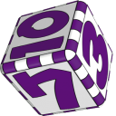

 Mario Party
Details
 |
|
| Playtime | Not Played |
| Last Activity | Never |
| Added | 4/29/2025 4:52:34 |
| Modified | 4/30/2025 8:53:01 |
| Completion Status | Not Played |
| Library | Playnite |
| Source | |
| Platform | Nintendo 64 |
| Release Date | 12/18/1998 |
| Community Score | |
| Critic Score | 79 |
| User Score | |
| Genre | Party |
| Developer | Hudson Soft |
| Publisher | Nintendo |
| Feature | Multiplayer Single Player |
| Links | Wikipedia Official website MobyGames IMDb |
| Tag | [People] composer: Yasunori Mitsuda [People] director: Kenji Kikuchi [People] producer: Shinichi Nakamoto [People] producer: Shinji Hatano |
Description
Mario Party is a 1998 party video game developed by Hudson Soft and published by Nintendo for the Nintendo 64. The game was targeted at a young audience. Mario creator Shigeru Miyamoto served as development supervisor. It received mostly positive critical reviews for its multiplayer mode, concept, and music; disapproval of its slow pacing; and mixed reviews of its graphics. It is the first installment in the Mario Party series and was followed by Mario Party 2 in 1999. The game received its first official re-release on the Nintendo Classics service in 2022. Content from this game was remastered as part of Mario Party: The Top 100 for the Nintendo 3DS, Mario Party Superstars and Super Mario Party Jamboree for the Nintendo Switch.
Gameplay
Mario Party is a party video game featuring six playable characters: Mario, Luigi, Princess Peach, Yoshi, Wario, and Donkey Kong. In the game's frame story, Mario and his friends argue about which of them is the "Super Star", a figure upon whom the entire world can rely. To settle their dispute, they set out for adventure to determine which of them is most worthy of the title. The gameplay is presented in the form of a traditional board game, and includes six game board maps themed after each of the playable characters. Two additional board maps become available later in the game. Mario Party includes multiplayer compatibility; each game on a board map consists of four players, including at least one human player and up to four. Any character who is not controlled by a human will instead be controlled by the game as a computer-controlled character. The skill level of the computer-controlled characters can be individually adjusted between "Easy", "Medium", or "Hard". After the players and board map have been determined, the player chooses how long the board map game will last: "Lite Play" consists of 20 turns, "Standard Play" consists of 35, and "Full Play" consists of 50. Upon starting a board, players each hit a dice block to determine turn order, with the highest number going first on each turn and the lowest number going last.
The goal of Mario Party is to collect the most stars within the allotted amount of turns. Stars must be purchased from Toad with coins, which can be earned through a selection from one of 50 mini-games that is played once at the end of each turn. The first player initiates a turn by rolling a dice block that determines how many spaces they will advance on the board, ranging from one to ten spaces. Each board map has a variety of spaces. Plain blue and red spaces cause the player who lands on one to respectively gain or lose three coins; the amount of coins is doubled to six during the final five turns. Blue spaces labeled with a star will initiate a single-player mini-game. Blue "!" spaces result in a Chance Time game, in which selected characters must give or exchange coins or stars; the player who landed on the space is given three blocks to hit, determining which characters and prize will be involved. Green "?" spaces result in an event occurring on the board map; each board features different events which can help or hinder certain players. Red spaces marked with an insignia of Bowser's head will cause Bowser to appear and hinder the player's progress. Blue spaces labeled with a mushroom give players a chance to either take another turn right away or lose their subsequent turn. Aside from Toad, other characters on the map include Boo, Koopa Troopa, and Bowser. Boo can steal coins or a star from another player on behalf of any player who passes him; stealing coins is free, but stealing a star costs 50 coins. Koopa Troopa is stationed at the starting point on board maps and will give ten coins to each player who passes him. Bowser will inconvenience players who pass him by forcibly selling them a useless item. On some boards, Toad's location will change after he sells a Star.
After all four players have made a movement on the board, a mini-game is initiated. The type of mini-game that is played is determined based on the color of space that each player landed on. Players that have landed on a green space will be randomly assigned to "blue" or "red" status before the mini-game is selected. If all players have landed on the same color of space, a 4-player mini-game is played. Other color variations result in either a 1 vs. 3 or 2 vs. 2 mini-game. The specific mini-game is then selected via roulette. Mini-game titles are normally highlighted in green, though some titles are highlighted in red; the winner of any given mini-game receives coins, and in red-highlighted games, the losers will lose coins. Another turn is initiated following the end of a mini-game, and the process is repeated until the allotted number of turns have been completed. After the end of the last turn, the winners of three awards are announced, with each winner receiving one additional star; the first two awards are given to the player(s) who collected the most coins in mini-games and throughout the board map game, and the third is given to the player(s) who landed on the most "?" spaces. The winner of the game, the "Super Star", is then determined by the number of total coins and stars collected by each player. If two or more characters have acquired the same amount of coins and stars, the winner will be determined with a roll of the dice block.
Other modes
The game's main menu includes a "Mushroom Bank" at which coins received by the human player during gameplay are deposited. The Mushroom Bank will initially carry 300 coins. Coins can be used to purchase mini-games at the "Mini-Game House", which can then be played at any time outside of normal board games. The Mini-Game House includes the "Mini-Game Stadium" mode, in which four players compete on a special board map consisting only of blue and red spaces. Coins are neither gained nor lost from these spaces, and coins are only earned by winning mini-games. The winner of Mini-Game Stadium is determined by whoever accumulates the highest number of coins by the completion of the allotted turns. Coins can also be used at the main menu's "Mushroom Shop", where items can be purchased and stored at the Mushroom Bank. These items can be toggled on or off for use during games, where they will randomly take effect when any character rolls the dice block. Such effects include special dice blocks with only high or low numbers. Other items remove Koopa Troopa or Boo from the board.
The game includes the single-player Mini-Game Island mode, in which one human player must play through each mini-game. The player has four lives and progresses through a world map with the completion of each mini-game, while losing a mini-game results in the loss of a life. If the player loses all lives, the game ends, and the player must resume from the last save point. If the player completes all the mini-games in Mini-Game Island, up to three bonus mini-games are unlocked.
Development
Mario Party was developed by Hudson Soft, known for creating the Bomberman franchise. It was previewed in the January 1999 issue of The 64Dream and teased in the #116 issue of the Nintendo Power magazine published in January 1999 in the "Coming Next Issue..." section.
Reception
Mario Party received "generally favorable" reviews according to the review aggregation website Metacritic. Critics considered Mario Party much more enjoyable when playing with other people through the game's multiplayer option. Joe Fielder of GameSpot said, "The games that are enjoyable to play in multi-player are nowhere near as good in the single player mode. Really, it's that multi-player competitive spark of screaming at and/or cheering for your friends that injects life into these often-simple little games, and without it, they're just simple little games." Peer Schneider of IGN took a similar stance, saying that it was the interaction between players rather than the interaction with the game that made Mario Party fun. James Bottorff of The Cincinnati Enquirer wrote, "Playing by yourself requires you to sit through the painfully slow moves of each of your computer opponents." Dr. Moo of GameRevolution wrote that playing alone "is terribly boring, and realistically scrounging up 4 people to play Mario Party is harder than it sounds". He added that the game had "great intentions, but unsatisfying delivery," calling it "a tedious and often frustrating experience". Reviewers for Game Informer wrote negatively about Mario Party and its mini-games. Scott Alan Marriott of AllGame was also dissatisfied with most of the mini-games, and criticized the random luck involved. He stated that Mario Party had a good concept but was somewhat disappointing, concluding that most players would be unsatisfied with the short mini-games and simple gameplay.
The music was praised, although the graphics received a mixed response. Critics believed the game would have appeal for young children. Electronic Gaming Monthly's authors gave the game an average score of 8.625 out of 10. In Japan, Famitsu's standard quartet of reviewers gave it a total score of 31 out of 40.
During the 3rd Annual Interactive Achievement Awards, the Academy of Interactive Arts & Sciences nominated Mario Party for the "Console Children's/Family Title of the Year" award, which was ultimately given to Pokémon Snap.
Within the first two months of its U.S. release, Mario Party was among the top five most rented video games. It was also the fourth-best-selling video game of April 1999.
Hand injury complaints
In Mario Party, certain minigames require rotation of the Nintendo 64 controller's analog stick at top speed. Some players reportedly got blisters, friction burns, and lacerations from rotating the stick with palms instead of using thumbs because of the uncomfortable design of the analog stick and it is faster to beat the minigames that way.
Although no lawsuits were filed, around 90 complaints were received by New York's attorney general's office and Nintendo of America eventually agreed to a settlement, which included providing gloves for injured players and paying the state's $75,000 legal fees. At the time, providing the estimated 1.2 million gloves could have cost Nintendo up to $80 million.
Mario Party was not re-released via the Virtual Console on Wii and Wii U, with Mario Party 2 released instead. The game would not be re-released until November 2, 2022, via the Nintendo Classics service.
Minigames using stick rotation returned in Mario Party: Island Tour. In Mario Party Superstars, a disclaimer is placed on the rules screen for the two mini games that use stick rotation, warning players not to use their palms to turn the stick to avoid hand injury and stick damage. A similar warning appears for the Nintendo Classics version of Mario Party when starting the game.